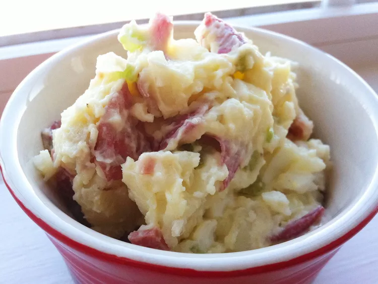

Potato salad

This jalapeno popper potato salad has the heat, the salty bacon, the
cheese, and the creamy ranch-seasoned dressing that put jalapeno poppers
top of mind. Bacon and potatoes roast at the same time, making prep easier
I usualy prepaare this when i want to have a light meal
Ingredients:
- 10 slices bacon
- 3 pounds red potatoes, cut into 1-inch cubes
- 1 (1 ounce) packet ranch seasoning mix, divided
- 1 teaspoons kosher salt
-
2 tablespoons chopped pickled jalapenos, plus 1 tablespoon juice from
jar
- 2 cups shredded Cheddar cheese
- 8 ounces sour cream
- 1/3 cup mayonnaise
- 1 teaspoon ground black pepper
- 4 green onions, thinly sliced, plus more for garnish if desired
- 2 jalapenos, seeded and finely chopped, plus more for garnish
Steps to follow :
-
Preheat the oven to 400 degrees F (200 degrees C). Line 2 rimmed baking
sheets with foil or parchment. Arrange bacon in a single layer on a
prepared pan. Add potatoes to the second pan and toss with oil, 2
tablespoons ranch seasoning, salt, and pepper until well coated.
-
Bake both pans in the preheated oven. Cook bacon until crisp, about 15
minutes. Remove bacon to cool on a rack. Cook potatoes until browned and
tender, 5 to 10 minutes more. Remove from the oven to cool.
-
Crumble bacon, reserve 1 tablespoon for garnish, and set the remaining
bacon aside.
-
When potatoes are cool enough to handle, add to a large bowl. Add
reserved bacon, green onions, jalapenos, pickled jalapenos, jalapeno
brine, cheese, sour cream, mayonnaise, and remaining ranch seasoning.
Stir until well combined. Serve immediately, or refrigerate until ready
to serve. Garnish with reserved bacon, jalapenos, and green onion.
home